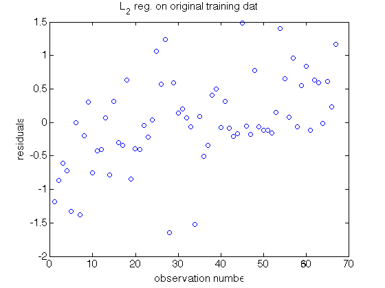
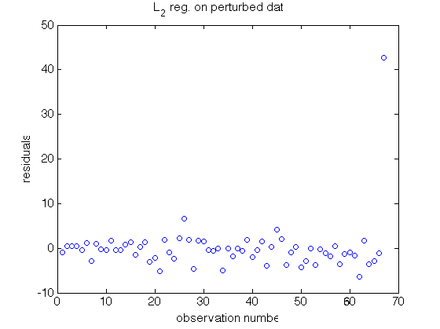
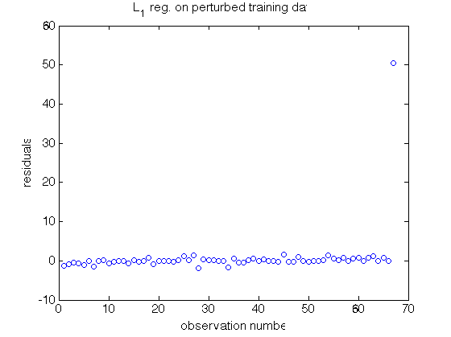
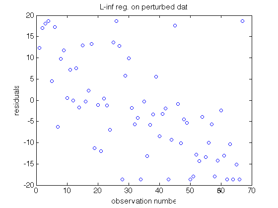
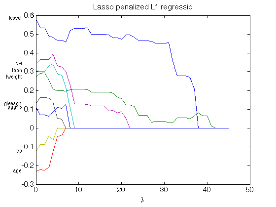
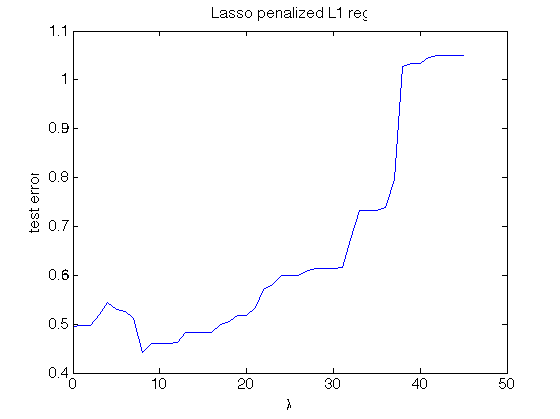
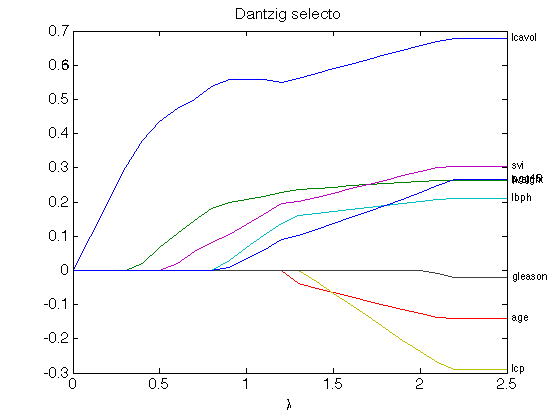
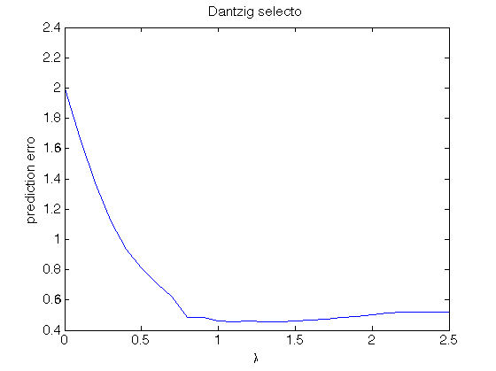
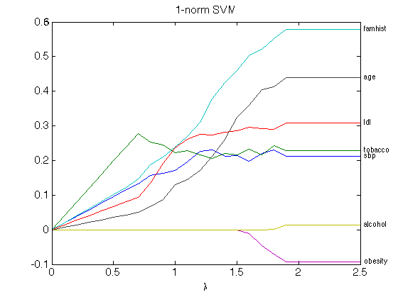
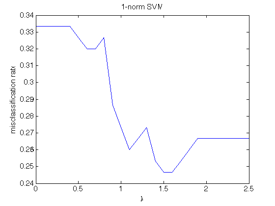

Contents
% System information
cpuinfo
ans =
Name: 'Intel(R) Core(TM) i7-3720QM CPU @ 2.60GHz'
Clock: '2600 MHz'
Cache: '256 KB'
NumProcessors: 4
OSType: 'Mac OS/X'
OSVersion: '10.9.5'
Q1: Prostate cancer data
clear; fid = fopen('prostate.txt'); rawdata = textscan(fid, [repmat('%f ', 1, 10) '%s'],... 'HeaderLines', 1, 'CollectOutput', true); fclose(fid); % row #, lcavol, lweight, age, lbph, svi, lcp, gleason, pgg45, lpsa, train trainidx = strcmp(rawdata{2}, 'T'); rawdata = rawdata{1, 1}; X = [ones(size(rawdata, 1), 1) rawdata(:, 2:9)]; y = rawdata(:, 10); % standardize predictors X(:, 2:end) = bsxfun(@minus, X(:, 2:end), mean(X(:, 2:end), 1)); % centering X(:, 2:end) = bsxfun(@rdivide, X(:, 2:end), std(X(:, 2:end))); % train/test split Xtr = X(trainidx, :); ytr = y(trainidx); Xte = X(~trainidx, :); yte = y(~trainidx); % L2 regression (least squares) on original training data bhat_l2_orig = Xtr \ ytr; res_l2_orig = ytr - Xtr * bhat_l2_orig; figure set(gca, 'FontSize', 15); plot(1:length(ytr), res_l2_orig, 'o'); xlabel('observation number'); ylabel('residuals'); title('L_2 reg. on original training data')
Q2: L1 and L-inf regression
% Corrupt ytr by one outliers ytr(end) = ytr(end) * 10; % add one outliers % L2 regression (least squares) on corrupted training data bhat_l2 = Xtr \ ytr; res_l2 = ytr - Xtr * bhat_l2; figure set(gca, 'FontSize', 15); plot(1:length(ytr), ytr - Xtr * bhat_l2, 'o'); xlabel('observation number'); ylabel('residuals'); title('L_2 reg. on perturbed data')
L1 regression (LAD) on corrupted training data
tic; bhat_l1 = lpreg(Xtr, ytr, 1); toc; res_l1 = ytr - Xtr * bhat_l1; figure set(gca, 'FontSize', 15); plot(1:length(ytr), res_l1, 'o'); xlabel('observation number'); ylabel('residuals'); title('L_1 reg. on perturbed training data')
Elapsed time is 0.011304 seconds.
Linf regression on corrupted training data
tic; bhat_linf = lpreg(Xtr, ytr, inf); toc; res_linf = ytr - Xtr * bhat_linf; figure set(gca, 'FontSize', 15); plot(1:length(ytr), res_linf, 'o'); xlabel('observation number'); ylabel('residuals'); title('L-inf reg. on perturbed data')
Elapsed time is 0.004232 seconds.
Summarize results
table([bhat_l2_orig; norm(res_l2_orig, 1); ... norm(res_l2_orig, 2); norm(res_l2_orig, Inf); norm(yte - Xte * bhat_l2_orig)^2 / length(yte)], ... [bhat_l1; norm(res_l1, 1); norm(res_l1, 2); ... norm(res_l1, Inf); norm(yte - Xte * bhat_l1)^2 / length(yte)], ... [bhat_l2; norm(res_l2, 1); norm(res_l2, 2); ... norm(res_l2, Inf); norm(yte - Xte * bhat_l2)^2 / length(yte)], ... [bhat_linf; norm(res_linf, 1); norm(res_linf, 2); norm(res_linf, Inf); norm(yte - Xte * bhat_linf)^2 / length(yte)], ... 'VariableNames', {'L2_Reg_True', 'L1_Reg', 'L2_Reg', 'Linf_Reg'}, ... 'RowNames', {'intercpt', 'lcavol', 'lweight', 'age', 'lbph', 'svi', ... 'lcp', 'gleason', 'pgg45', 'L1 loss', 'L2 loss', 'Linf loss', 'Test error'})
ans =
L2_Reg_True L1_Reg L2_Reg Linf_Reg
___________ ________ ________ _________
intercpt 2.4649 2.4431 2.9617 5.0524
lcavol 0.67953 0.58389 1.0703 9.1984
lweight 0.26305 0.27091 -0.38856 -0.076956
age -0.14146 -0.23109 -0.1277 -1.0545
lbph 0.21015 0.30471 1.4992 5.5695
svi 0.3052 0.34266 1.6154 2.6952
lcp -0.28849 -0.1244 -1.1161 -3.1856
gleason -0.021305 0.12734 -1.9826 -5.8453
pgg45 0.26696 0.10872 2.7956 7.5934
L1 loss 33.407 81.328 160.48 656.8
L2 loss 5.4246 50.845 46.774 95.368
Linf loss 1.6487 50.551 42.614 18.664
Test error 0.52127 0.49466 6.5098 82.678
This is my function for fitting L1, L2, or L-inf regressions
type lpreg
function [bhat] = lpreg(X, y, p, varargin)
% LPREG Lp regression for p = 1, 2, or inf
% [BHAT] = LPREG(X, y, p) finds regression coeffcients bhat that minimize
% norm(y - X * bhat, p).
%
% INPUT:
% X - n-by-p design matrix
% y - n-by-1 response vector
% p - 1|2 (default)|inf
%
% OPTIONAL NAME-VALUE PAIRS:
%
% OUTPUT:
% bhat - p-by-1 regression coefficents
%
% Example
%
% References
%
% Copyright 2015 North Carolina State University
% Hua Zhou (hua_zhou@ncsu.edu)
% input parsing rule
[n, q] = size(X);
argin = inputParser;
argin.addRequired('X', @isnumeric);
argin.addRequired('y', @(x) isnumeric(x) && length(y)==n);
argin.addRequired('p', @(x) isnumeric(x) && x>=0);
% parse inputs
argin.parse(X, y, p, varargin{:});
% L1 (LAD) regression
if p == 1
% use QUROBI solver if possible
gmodel.obj = [ones(2*n, 1); zeros(q, 1)];
gmodel.A = [speye(n) -speye(n) X];
gmodel.sense = '=';
gmodel.rhs = y;
gmodel.lb = [zeros(2*n, 1); -inf(q, 1)];
gparam.OutputFlag = 0;
gresult = gurobi(gmodel, gparam);
bhat = gresult.x(2*n+1:end);
% L2 (least squares) regression
elseif p == 2
bhat = X \ y;
% Linfty regression
elseif isinf(p)
% cvx_begin
% variable bhat(q)
% minimize norm(y - X * bhat, inf)
% cvx_end
% use QUROBI solver if possible
gmodel.obj = [1; zeros(q, 1)];
gmodel.A = sparse([-ones(n, 1) -X; -ones(n, 1) X]);
gmodel.sense = repmat('<', 2 * n, 1);
gmodel.rhs = [-y; y];
gmodel.lb = [zeros, -inf(1, q)];
gparam.OutputFlag = 0;
gresult = gurobi(gmodel, gparam);
bhat = gresult.x(2:end);
end
end
Q3: Quantile regression
% Corrupt ytr by one outliers ytr = y(trainidx); ytr(end) = ytr(end) * 10; % add one outliers % solve quantile regression at tau = 0.25, 0.5, 0.75 taulist = [0.25, 0.5, 0.75]; bhat = zeros(size(Xtr, 2), length(taulist)); res = zeros(size(Xtr, 1), length(taulist)); err = zeros(1, length(taulist)); tic; for i = 1:length(taulist) tau = taulist(i); bhat(:, i) = quantreg(Xtr, ytr, tau); err(i) = norm(yte - Xte * bhat(:, i))^2 / length(yte); res(:, i) = ytr - Xtr * bhat(:, i); end toc; % Summarize results table([bhat_l2_orig; norm(res_l2_orig, 1); ... norm(res_l2_orig, 2); norm(res_l2_orig, Inf); norm(yte - Xte * bhat_l2_orig)^2/length(yte)], ... [bhat(:, 1); norm(res(:, 1), 1); norm(res(:, 1), 2); ... norm(res(:, 1), Inf); err(1)], ... [bhat(:, 2); norm(res(:, 2), 1); norm(res(:, 2), 2); ... norm(res(:, 2), Inf); err(2)], ... [bhat(:, 3); norm(res(:, 3), 1); norm(res(:, 3), 2); norm(res(:, 3), Inf); err(3)], ... 'VariableNames', {'L2_Reg_True', 'Q1', 'Median', 'Q3'}, ... 'RowNames', {'intercpt', 'lcavol', 'lweight', 'age', 'lbph', 'svi', ... 'lcp', 'gleason', 'pgg45', 'L1 loss', 'L2 loss', 'Linf loss', 'Test error'})
Elapsed time is 0.007787 seconds.
ans =
L2_Reg_True Q1 Median Q3
___________ ________ ________ _________
intercpt 2.4649 2.1425 2.4431 3.0156
lcavol 0.67953 0.75374 0.58389 0.73336
lweight 0.26305 0.28532 0.27091 0.047868
age -0.14146 -0.17962 -0.23109 -0.020262
lbph 0.21015 0.28391 0.30471 0.20085
svi 0.3052 0.36623 0.34266 0.27373
lcp -0.28849 -0.28481 -0.1244 -0.20381
gleason -0.021305 0.086891 0.12734 -0.17075
pgg45 0.26696 0.25195 0.10872 0.24553
L1 loss 33.407 86.576 81.328 95.096
L2 loss 5.4246 50.879 50.845 50.45
Linf loss 1.6487 50.505 50.551 49.909
Test error 0.52127 0.65304 0.49466 0.73737
Q4: Lasso penalized L1 regression
% restore to original y values
ytr = y(trainidx);
Solve lasso penalized l1 over a grid
lambdalist = 0:45; bhat_path = zeros(size(Xtr, 2), length(lambdalist)); err_path = zeros(1, length(lambdalist)); tic; for i = 1:length(lambdalist) lambda = lambdalist(i); % transform to an L1 regression problem Xtmp = lambda * eye(size(Xtr, 2)); Xtmp(1, :) = []; % not penalize the intercept Xtmp = [Xtr; Xtmp]; %#ok<AGROW> ytmp = [ytr; zeros(size(Xtr, 2) - 1, 1)]; bhat_path(:, i) = lpreg(Xtmp, ytmp, 1); err_path(i) = norm(yte - Xte * bhat_path(:, i))^2/length(yte); end toc; % plot solution path figure; set(gca, 'FontSize', 15); plot(lambdalist, bhat_path(2:end, :)); xlabel('\lambda'); title('Lasso penalized L1 regression'); predname = {'lcavol', 'lweight', 'age', 'lbph', 'svi', ... 'lcp', 'gleason', 'pgg45'}; for i = 1:length(predname) text(-3, bhat_path(i + 1, 1), predname{i}, 'HorizontalAlignment','right'); end % plot testing error figure; set(gca, 'FontSize', 15); plot(lambdalist, err_path); xlabel('\lambda'); ylabel('test error'); title('Lasso penalized L1 reg.');
Elapsed time is 0.149211 seconds. 
Q5: Dantzig selector
% restore original y values
ytr = y(trainidx);
Solve Dantzig selector over a grid
lambdalist = 0:0.1:2.5; bhat_path = zeros(size(Xtr, 2), length(lambdalist)); err_path = zeros(1, length(lambdalist)); tic; for i = 1:length(lambdalist) lambda = lambdalist(i); bhat_path(:, i) = dantzig(Xtr, ytr, lambda); err_path(i) = norm(yte - Xte * bhat_path(:, i))^2 / length(yte); end toc; % plot solution path figure; set(gca, 'FontSize', 15); plot(lambdalist, bhat_path(2:end, :)); xlabel('\lambda'); title('Dantzig selector'); predname = {'lcavol', 'lweight', 'age', 'lbph', 'svi', ... 'lcp', 'gleason', 'pgg45'}; for i = 1:length(predname) text(lambdalist(end)+0.03, bhat_path(i + 1, end), predname{i}, ... 'HorizontalAlignment','left'); end % plot testing error figure; set(gca, 'FontSize', 15); plot(lambdalist, err_path); xlabel('\lambda'); ylabel('prediction error'); title('Dantzig selector');
Elapsed time is 0.045072 seconds. 
This is my function for solving Dantzig selector
type dantzig
function [bhat] = dantzig(X, y, lambda, varargin)
% DANTZIG Dantzig selector
% [BHAT] = DANTZIG(X, y, lambda) finds regression coeffcients bhat that
% minimize norm(y - X * bhat, inf) subject to L1 constraint
% norm(bhat(2:end), 1) <= lambda.
%
% INPUT:
% X - n-by-p design matrix, first column should be intercept
% y - n-by-1 response vector
% lambda - nonnegative scalar
%
% OPTIONAL NAME-VALUE PAIRS:
%
% OUTPUT:
% bhat - p-by-1 regression coefficents
%
% Example
%
% References
%
% Copyright 2015 North Carolina State University
% Hua Zhou (hua_zhou@ncsu.edu)
% input parsing rule
[n, p] = size(X);
argin = inputParser;
argin.addRequired('X', @isnumeric);
argin.addRequired('y', @(x) isnumeric(x) && length(y)==n);
argin.addRequired('lambda', @(x) isnumeric(x) && x>=0);
% parse inputs
argin.parse(X, y, lambda, varargin{:});
% precompute inner products
xtx = X' * X;
xty = X' * y;
% model parameters: t, b+, b-
gmodel.obj = [1; zeros(2 * p, 1)];
% magnitude of p gradients should be less than t
gmodel.A = sparse([-ones(p, 1) -xtx xtx; -ones(p, 1) xtx -xtx]);
gmodel.sense = repmat('<', 2 * p, 1);
gmodel.rhs = [-xty; xty];
% L1 constraint
gmodel.A = [gmodel.A; 0, 0, ones(1, p - 1), 0, ones(1, p - 1)];
gmodel.sense = [gmodel.sense; '<'];
gmodel.rhs = [gmodel.rhs; lambda];
% optimize!
gparam.OutputFlag = 0;
gresult = gurobi(gmodel, gparam);
bhat = gresult.x(2:p + 1) - gresult.x(p + 2:end);
end
Q6: 1-norm SVM on the SA heart disease data
Read in data
clear; fid = fopen('saheart.txt'); rawdata = textscan(fid, [repmat('%f ', 1, 5) '%s ' repmat('%f ', 1, 6)],... 'HeaderLines', 1, 'CollectOutput', true); fclose(fid); rawdata = [rawdata{1,1} cellfun(@(s) strcmp(s,'Present'),rawdata{1, 2}), ... rawdata{1, 3}]; % sbp, tobacco, ldl, famhist, obesity, alcohol, age X = rawdata(:,[2 3 4 6 8 9 10]); X = bsxfun(@minus, X, mean(X, 1)); % centering X = bsxfun(@rdivide, X, std(X)); % standardize X = [ones(size(X,1), 1), X]; y = rawdata(:, end - 1); trainidx = logical(rawdata(:, end)); % train/test split Xtr = X(trainidx, :); ytr = y(trainidx); Xte = X(~trainidx, :); yte = y(~trainidx); % fit logistic reg. and make sure the results match that in ESLII p126 Fig 4.13 b0 = glmfit(Xtr, ytr, 'binomial','constant','off'); display(b0); % change 0/1-valued y to -1/1-valued class labels ctr = 2 * ytr - 1; cte = 2 * yte - 1;
b0 =
-0.8640
0.2767
0.3088
0.3690
0.5044
-0.1116
0.0892
0.6316
Solve 1-norm svm over a grid
lambdalist = 0:0.1:2.5; bhat_path = zeros(size(Xtr, 2), length(lambdalist)); err_path = zeros(1, length(lambdalist)); tic; for i = 1:length(lambdalist) lambda = lambdalist(i); bhat_path(:, i) = svml1(Xtr, ctr, lambda); err_path(i) = nnz(cte ~= sign(Xte * bhat_path(:, i))) / length(cte); end toc; % plot solution path figure; set(gca, 'FontSize', 15); plot(lambdalist, bhat_path(2:end, :)); xlabel('\lambda'); title('1-norm SVM'); predname = {'sbp', 'tobacco', 'ldl', 'famhist', 'obesity', 'alcohol', 'age'}; for i = 1:length(predname) text(lambdalist(end)+0.03, bhat_path(i + 1, end), predname{i}, ... 'HorizontalAlignment','left'); end % plot testing error figure; set(gca, 'FontSize', 15); plot(lambdalist, err_path); xlabel('\lambda'); ylabel('misclassification rate'); title('1-norm SVM');
Elapsed time is 0.384947 seconds. 
This is my function for fitting 1-norm svm
type svml1
function [bhat] = svml1(X, y, lambda, varargin)
% SVML1 1-norm support vector machine
% [BHAT] = SVML1(X, y, lambda) finds regression coeffcients bhat that minimize
% sum_pos(1 - y .* (X * bhat)) subject to the L1 constraint
% norm(bhat(2:end), 1) <= lambda
%
% INPUT:
% X - n-by-p predictor matrix, first column should be intercept
% y - n-by-1 class labels taking values -1 or 1
% lambda - nonnegative scalar
%
% OPTIONAL NAME-VALUE PAIRS:
%
% OUTPUT:
% bhat - p-by-1 regression coefficents
%
% Example
%
% References
%
% Copyright 2015 North Carolina State University
% Hua Zhou (hua_zhou@ncsu.edu)
% input parsing rule
[n, p] = size(X);
argin = inputParser;
argin.addRequired('X', @isnumeric);
argin.addRequired('y', @(x) isnumeric(x) && length(y)==n);
argin.addRequired('lambda', @(x) isnumeric(x) && x>=0);
% parse inputs
argin.parse(X, y, lambda, varargin{:});
% pre-compute y.*X
yx = bsxfun(@times, y, X);
% % cvx
% cvx_begin
% variable bhat(p)
% minimize sum(pos(1 - yx * bhat))
% subject to
% sum(abs(bhat(2:end))) <= lambda
% cvx_end
% parameters are r+, r-, b+, b-
gmodel.obj = [ones(n, 1); zeros(n + 2 * p, 1)];
% equality constraint: r+ - r- = 1 - y .* (X * (b+ - b-))
gmodel.A = [speye(n), -speye(n), yx, -yx];
gmodel.sense = repmat('=', n, 1);
gmodel.rhs = ones(n, 1);
% L1 constraint
gmodel.A = [gmodel.A; ...
zeros(1, 2 * n), 0, ones(1, p - 1), 0, ones(1, p - 1)];
gmodel.sense = [gmodel.sense; '<'];
gmodel.rhs = [gmodel.rhs; lambda];
% lower bound: r+ >= 0, r- >= 0, b+ >= 0, b- >= 0
gmodel.lb = zeros(2 * (p + n), 1);
gparam.OutputFlag = 0;
gresult = gurobi(gmodel, gparam);
bhat = gresult.x(2 * n + 1: 2 * n + p) - gresult.x(2 * n + p + 1:end);
end